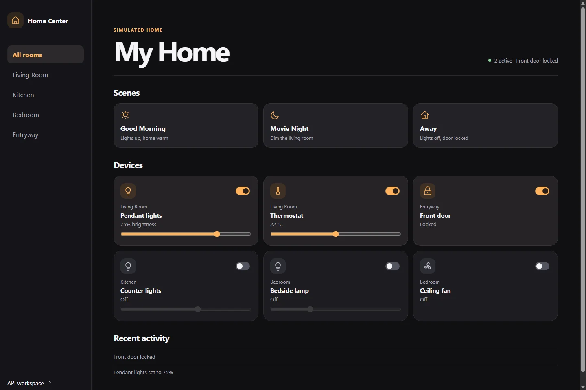
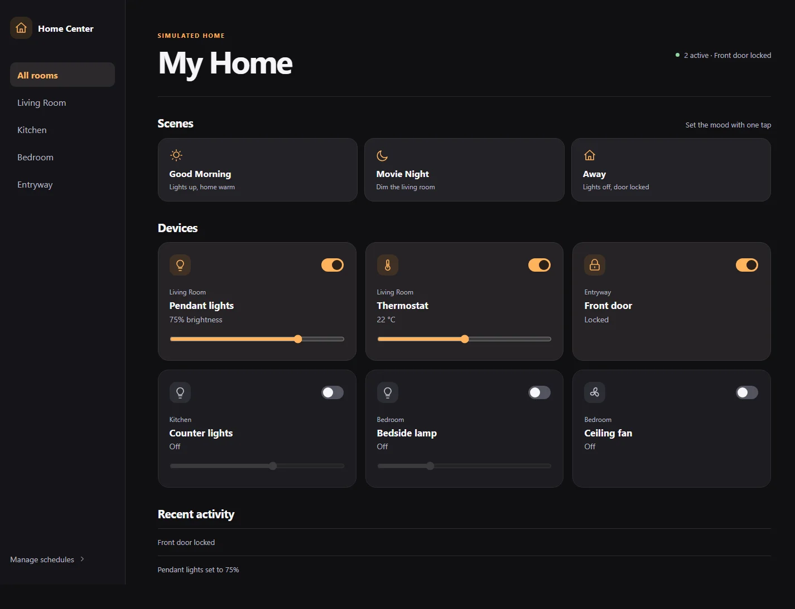
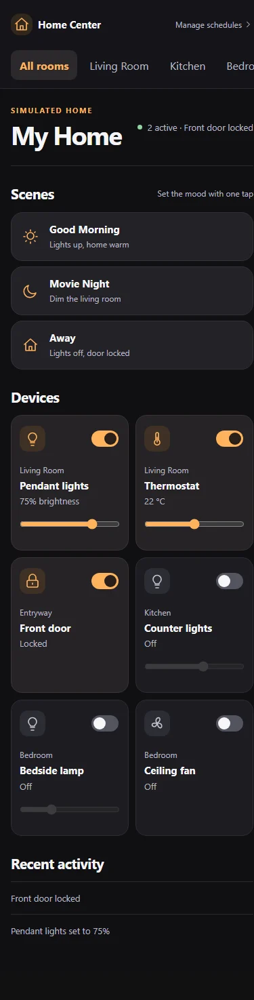

Engineering project · Runtime screenshot
Smart Home Command Center
Control a simulated home, switch between rooms, and activate scenes.
Local demo · Example workflow
Public source access pending.
Run the local demo
From the prepared project checkout, run these commands and open the address printed by the server. The repository may require access.
cd frontend
npm ci
npm run dev


Problem
Control a simulated home, switch between rooms, and activate scenes.
Architecture
The React simulation runs in the browser. A separate API workspace uses ASP.NET Core, EF Core and PostgreSQL.
Engineering decisions
- Toggle a light or choose Movie Night, then check how the dashboard records the change.
Implemented workflow
- Toggle a light or choose Movie Night, then check how the dashboard records the change.
Checks and evidence
Browser workflow checks passed in the handoff. Physical devices and a live PostgreSQL workflow remain unverified.
Scope and next steps
- The examples use sample data and are designed for local review.
Technology
React · TypeScript · ASP.NET Core · PostgreSQL
Preview availability
Screenshots show the prepared local version. Hosted demos remain pending, and source access may require permission. Local setup requirements and remaining limits are documented above.
← Return to portfolio